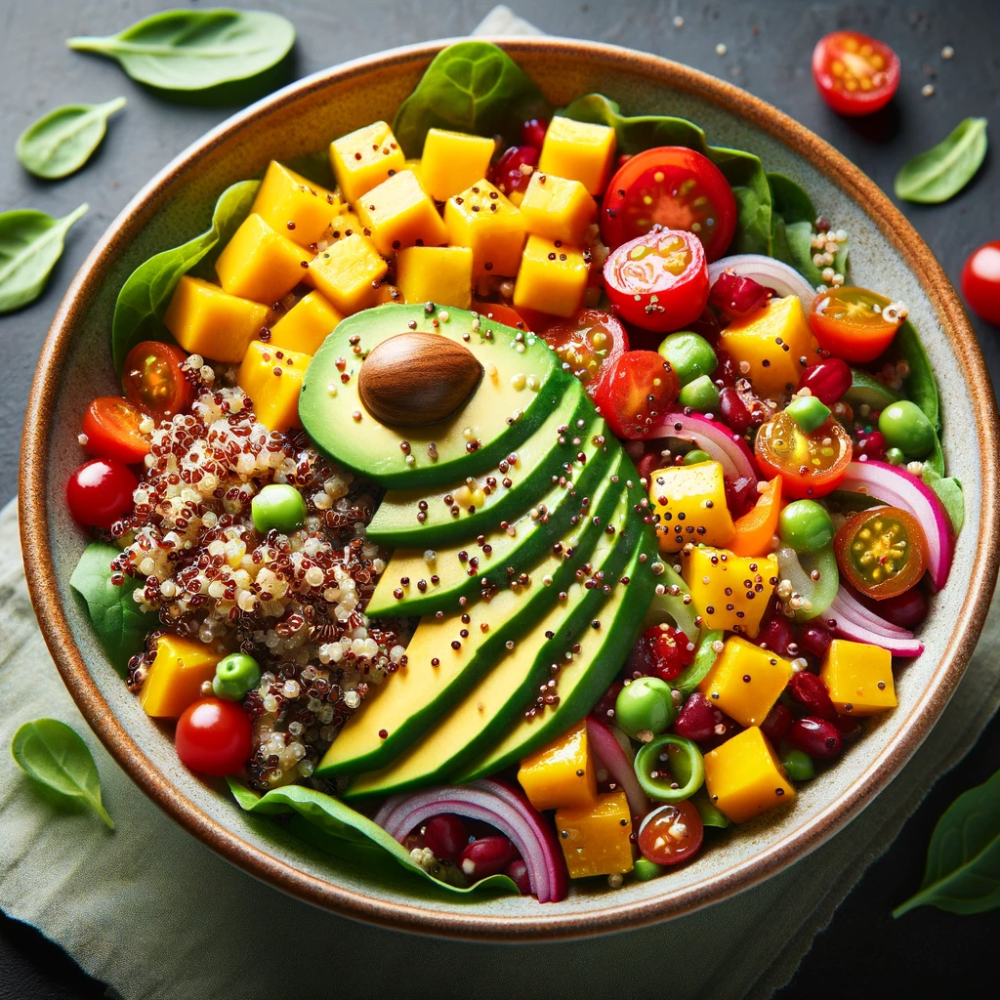

Receitas Saudáveis

Salada de Quinoa com Abacate e Grão-de-Bico
- Ingredientes:
- 1 xícara de quinoa
- 1 abacate cortado em cubos
- 1 xícara de grão-de-bico cozido
- 1 pepino picado
- 1/2 xícara de tomates cereja cortados ao meio
- Suco de 1 limão
- 2 colheres de sopa de azeite de oliva
- Sal e pimenta a gosto
- Modo de Preparo:
- Cozinhe a quinoa conforme as instruções da embalagem.
- Em uma tigela grande, misture a quinoa cozida, o abacate, o grão-de-bico, o pepino e os tomates cereja.
- Regue com o suco de limão e o azeite de oliva.
- Tempere com sal e pimenta a gosto.
- Misture bem e sirva fresca.

Smoothie de Espinafre e Banana
- Ingredientes:
- 1 banana
- 1 xícara de espinafre fresco
- 1/2 xícara de iogurte natural
- 1/2 xícara de leite de amêndoas
- 1 colher de chá de mel (opcional)
- Modo de Preparo:
- Coloque todos os ingredientes no liquidificador.
- Bata até obter uma mistura homogênea.
- Sirva imediatamente.

Frango Grelhado com Batata Doce e Brócolis
- Ingredientes:
- 2 peitos de frango
- 2 batatas doces cortadas em rodelas
- 1 xícara de brócolis
- 2 colheres de sopa de azeite de oliva
- Sal, pimenta e ervas a gosto (alecrim, tomilho)
- Modo de Preparo:
- Tempere os peitos de frango com sal, pimenta e ervas.
- Em uma grelha ou frigideira, aqueça 1 colher de sopa de azeite e grelhe o frango até cozinhar completamente.
- Enquanto isso, pré-aqueça o forno a 200°C.
- Em uma assadeira, coloque as rodelas de batata doce e o brócolis, regue com 1 colher de sopa de azeite, sal e pimenta.
- Asse por cerca de 20-25 minutos ou até as batatas doces ficarem macias.
- Sirva o frango grelhado acompanhado das batatas doces e brócolis assados.

Iogurte com Frutas e Granola
- Ingredientes:
- 1 xícara de iogurte natural
- 1/2 xícara de frutas variadas (morango, mirtilo, banana)
- 1/4 xícara de granola
- Mel a gosto (opcional)
- Modo de Preparo:
- Em uma tigela, coloque o iogurte.
- Adicione as frutas por cima.
- Polvilhe a granola.
- Se desejar, regue com um pouco de mel.
- Sirva imediatamente.